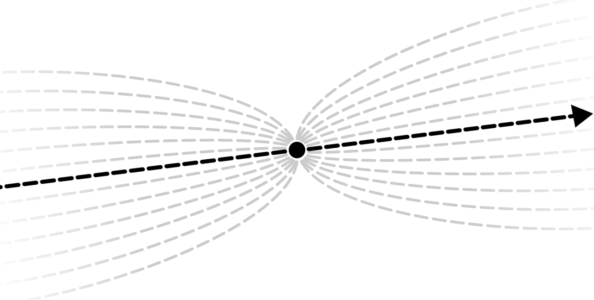

역자 노트
이 웹페이지는 발라지 스리니바산(Balaji S. Srinivasan)의 책 <네트워크 국가 The Network State>를 한국어로 번역하기 위해 만들어졌습니다. 원문은 thenetworkstate.com에서 무료로 읽으실 수 있습니다.
가급적 원문에 가깝게 번역하려고 했으나, 직역이 곤란하거나 한국어 문장이 난잡해지는 경우 의역과 문장 재배열을 자유롭게 사용했습니다. 원문 자체가 지속적으로 업데이트 되기 때문에 번역본과 불일치가 생길 수 있으니 번역에 의문이 생길 경우 원문을 참고해 주세요. 번역자에게 생업이 따로 있기 때문에 첫 챕터 이후의 번역은 천천히 진행될 예정입니다.
비상업적 용도로 자유롭게 이용하실 때에는 원저자(Balaji Srinivasan)와 번역자(nstate.eth)를 명시해주세요.
사토시 나카모토가 비트코인이라는 신대륙에 상륙하면서 새로운 프론티어가 다시 열렸고, 쇠퇴하는 구대륙을 벗어나 새로운 마을, 새로운 도시, 새로운 문명을 건설할 기회가, 그리고 마침내는 신대륙에서 축적한 역량으로 구대륙마저도 새롭게 부활시킬 수 있는 기회가 눈앞에 펼쳐져 있습니다.
한국어 화자들, 특히 젊은 청년들이 천천히 가라앉는 구대륙에서 우울과 비관에 빠져 사냥꾼이 아닌 사냥감으로서 무기력한 삶을 살아가거나, 또는 침몰하는 배에서 제로섬 게임에 몰두하는 모습을 보면 가슴이 아프고 울화가 쌓입니다. 그 우울한 광경은 항상 제 가슴을 무겁게 짓누릅니다. 바다 건너에 깃발만 꽂으면 내것이 되는 빈 땅이 널려있는데 말이죠.
물론 이렇게 다시 열린 '와일드 웨스트'에서 '와일드'의 의미를 무시할 수는 없습니다. 빈 땅에 들짐승과 무법자들이 횡행하고, 황무지에는 홍수와 가뭄이 연달아 들이칩니다. 하지만 이 모든것들이 개척자의 구둣발 아래 결국은 복종하게 될 것이고, 한국어 화자들도 와일드 웨스트로 향하는 정복자들의 행렬에 뒤쳐져서는 안됩니다. 그래서 이 책을 개인적으로라도 번역해서, 핵심 아이디어들이 요약된 첫 챕터만이라도 한국어 웹에 신속하게 공급해야겠다는 결심을 하게 되었습니다.
이 책의 모든 내용에 동의할 필요도 없고, 이 책을 마치 미래를 예견하는 예언서처럼 읽을 필요가 전혀 없습니다. 번역자인 저 자신도 그런식으로 이 책을 읽지 않습니다. 오히려, 저자 스스로가 말하듯이 이 책을 하나의 유용한 도구상자로 활용하는 것이 보다 적절한 방식일 것입니다. 인류가 처음 조우하는 이 독특한 대륙에서 무엇이 어디까지 가능할지는 아직 누구도 완전히 알지 못합니다. 이 책은 그 탐험의 여정에 도움이 되는 많은 영감과 아이디어, 그리고 여러가지 유용한 도구들을 제공해줄 수 있을 것입니다.
짧은 글을 마무리하며, 사람들의 기억에서 오랫동안 잊혀졌던 임무 명령서의 먼지를 털어내고 다시 복명복창 해봅니다: "하나님이 그들에게 복을 주시며 이르시되 생육하고 번성하여 땅에 충만하라, 땅을 정복하라" (창세기 1:28)

Quickstart
제 1 장
서두
당신은 글 전체를 읽을지 결정하기 위해 앞부분을 훓어보는 사람인가? 땡잡았습니다!
우리는 한 문장, 한 그림, 일천 단어, 그리고 한 에세이로 요약된 스타트업 사회와 네트워크 국가의 개념을 준비했다. 참을성이 없는 편이라면 위의 링크들을 클릭하라. 물론 온전한 경험을 위해서는 한번에 한 페이지씩 읽을 수 있을 것이다.
페이지들에 대해 말하자면, 이 책의 모든 섹션은 온라인이며 개별 웹페이지로 공유할 수 있다. 예를 들어, 이 섹션의 주소는